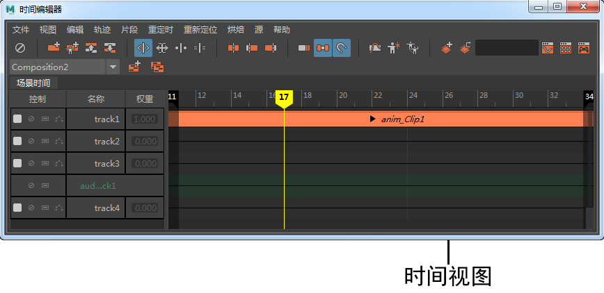
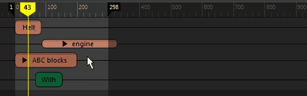
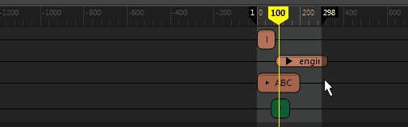
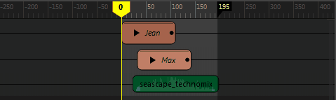
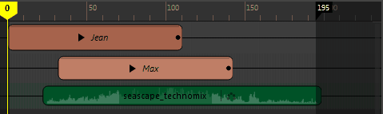
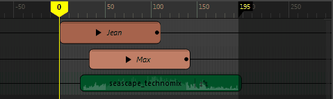
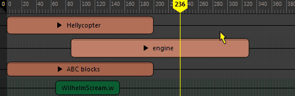
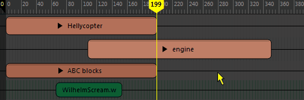
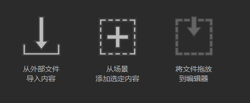

时间视图位于名单旁边并包含轨迹上的动画片段。每个片段都与组、对象或对象的属性关联。使用滚动条可以查看时间视图中的所有动画片段。选择某个片段时，在该片段上方将显示开始帧和结束帧。
导航时间视图
有关调整播放范围的信息，请参见时间编辑器播放范围。
有关添加新轨迹的信息，请参见使用时间编辑器轨迹。
有关在时间视图中添加片段的信息，请参见使用时间编辑器片段。
- 帧指示器
- 帧指示器是选择片段后显示在其上方的编号。黑色的帧指示器表示片段的开始帧和结束帧，灰色的帧指示器表示增量帧差，具体取决于您所使用的工具。
- 移动工具：灰色的帧指示器显示片段已相对于其上一位置移动的帧数。
- 修剪工具：灰色的帧指示器显示已修剪的帧数。
- 缩放工具：灰色的帧指示器显示片段自缩放以来已发生更改的百分比。
- 循环/保持工具：灰色的帧指示器显示循环/保持区域中片段长度的倍数。（1.00x 表示循环/保持区域与原始片段等长。）
- 平移和缩放
- 您可以使用相同的热键在时间视图中进行平移和缩放，就如同在 Maya 视口中一样操作。
-
- 平移：按住 Alt 键（或者，在 Mac 上按住 Option 键）并使用鼠标中键拖动。

- 缩放：按住 Alt 键（或者，在 Mac 上按住 Option 键）并使用鼠标右键拖动。将基于鼠标光标的位置使缩放居中。

- 框显片段
- 您可以使用相同的热键将片段定位到时间视图的中心，就如同在 Maya 视口中一样操作。
-
- 框显全部：按 A 键

- 框显当前选择：按 F 键

- 框显播放范围：按 G 键

- 拖动动画
- 沿时间标尺或在轨迹视图中拖动当前时间标记，找到动画的特定部分。
-
- 若要沿轨迹视图顶部的时间标尺拖动，请向左或向右拖动当前时间标记。

- 若要在时间视图（位于时间标尺下方）中拖动，请按 K 键释放光标锁定。光标将在时间视图中锁定拖动，从而防止无意中移动片段。

- 调整播放范围
- 在时间标尺上，单击暗区域的边并拖动以更改播放范围。通过拖动时间标尺上的标志，在时间视图中延伸播放范围。请参见时间编辑器播放范围。
- 添加动画
- 每次在新的 Maya 会话中打开时间编辑器时，都会显示时间编辑器的启动图标。将这些图标包含在内，使您可以在时间编辑器中快速启动和运行动画。
-
